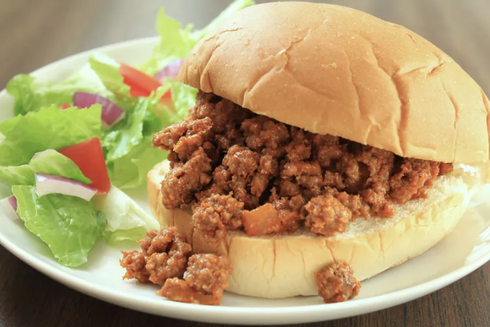

Sloppy joes

How to Make Sloppy Joes
You'll find a detailed ingredient list and step-by-step instructions in the recipe below, but let's go over the basics:
Ingredients:
- Beef
- Onion
- Green Pepper
- Hamburguer buns
Steps:
- Cook the beef, onion, and green pepper
- Drain the liquids, then stir in the remaining ingredients
- Simmer for about 30 minutes. Serve on hamburger buns
Return to main page